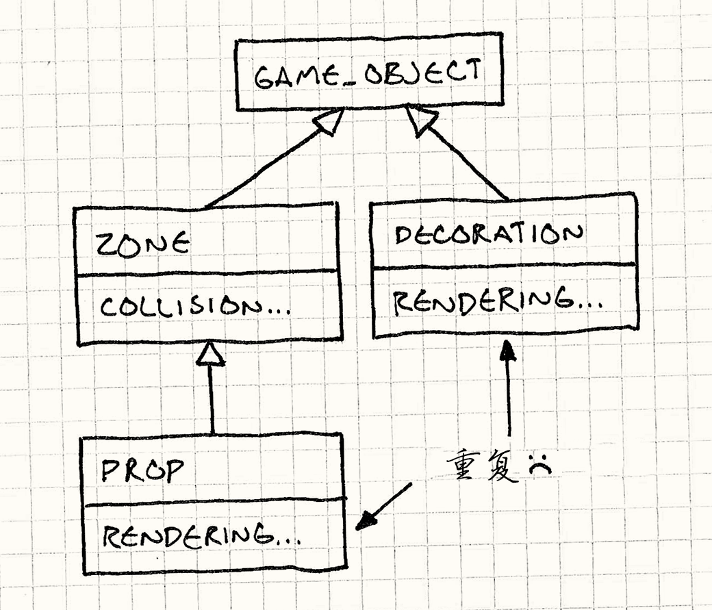

Component
Game Programming PatternsDecoupling Patterns
组件模式 解耦模式
Intent
意图
Allow a single entity to span multiple domains without coupling the domains to each other.
允许单一的实体跨越多个域，无需将这些域耦合彼此。
Motivation
动机
Let’s say we’re building a platformer. The Italian plumber demographic is covered, so ours will star a Danish baker, Bjørn. It stands to reason that we’ll have a class representing our friendly pastry chef, and it will contain everything he does in the game.
比方说，我们正在构建平台跳跃游戏。意大利水管工已经有人做了，因此我们将出动丹麦的面包师，Bjorn。照理说，会有有一个类来表示友好的糕点厨师，将包含他在比赛中做的一切。
Since the player controls him, that means reading controller input and translating that input into motion. And, of course, he needs to interact with the level, so some physics and collision go in there. Once that’s done, he’s got to show up on screen, so toss in animation and rendering. He’ll probably play some sounds too.
由于玩家控制他，这意味着读取控制器的输入然后转化为运动。而且，当然，他需要与关卡相互作用， 所以要引入物理和碰撞。一旦这样做了，他必须在屏幕上出现，所以要引入动画和渲染。他可能还会播放一些声音。
Hold on a minute; this is getting out of control. Software Architecture 101 tells us that different domains in a program should be kept isolated from each other. If we’re making a word processor, the code that handles printing shouldn’t be affected by the code that loads and saves documents. A game doesn’t have the same domains as a business app, but the rule still applies.
等一下;这在失控。软件体系结构101课程告诉我们，在一个程序不同域应保持分离。如果我们做一个文字处理器，处理打印的代码不应该受加载和保存文件的代码影响。一个游戏和企业应用程序没有相同的域，但该规则仍然适用。
As much as possible, we don’t want AI, physics, rendering, sound and other domains to know about each other, but now we’ve got all of that crammed into one class. We’ve seen where this road leads to: a 5,000-line dumping ground source file so big that only the bravest ninja coders on your team even dare to go in there.
我们希望AI，物理，渲染，声音和其他域尽可能不相互了解，但现在我们将所有这一切挤在一个类中。我们已经看到了这条路通往何处：5000行的巨大代码文件，哪怕是你们团队中最勇敢的程序员也不敢进去。
This is great job security for the few who can tame it, but it’s hell for the rest of us. A class that big means even the most seemingly trivial changes can have far-reaching implications. Soon, the class collects bugs faster than it collects features.
对于能驯服他的少数人这是伟大的工作，但对我们中的其他人是地狱。这么大的类意味着，即使是看似微不足道的变化可以有深远的影响。很快，为类添加错误速度明显快于添加功能。
The Gordian knot
快刀斩乱麻
Even worse than the simple scale problem is the coupling one. All of the different systems in our game have been tied into a giant knotted ball of code like:
比起单纯的规模问题，更糟糕的是耦合。在我们的游戏中所有不同的系统被绑成了一个巨大的代码球。
if (collidingWithFloor() && (getRenderState() != INVISIBLE)) { playSound(HIT_FLOOR); }
Any programmer trying to make a change in code like that will need to know something about physics, graphics, and sound just to make sure they don’t break anything.
任何试图改变代码的程序员，都需要知道一些关于物理，图形和声音的知识，而这只是为了确保不破坏什么。
These two problems compound each other; the class touches so many domains that
every programmer will have to work on it, but it’s so huge that doing so is a
nightmare. If it gets bad enough, coders will start putting hacks in other parts
of the codebase just to stay out of the hairball that this Bjorn class has
become.
这两个问题彼此混合;这个类涉及如此多的域，每个程序员都得接触它，但它是如此巨大，这就变成了一场噩梦。。如果它变得够糟糕，程序员会黑入代码库的其他部分，仅仅为了躲开这个像毛球一样的Bjorn类。
Cutting the knot
抽剑断结
We can solve this like Alexander the Great — with a sword. We’ll take our
monolithic Bjorn class and slice it into separate parts along domain
boundaries. For example, we’ll take all of the code for handling user input and
move it into a separate InputComponent class. Bjorn will then own an
instance of this component. We’ll repeat this process for each of the domains that
Bjorn touches.
我们可以像亚历山大大帝一样解决这个问题——用剑。将Bjorn类切片成沿域独立的部分。例如，我们抽出所有处理用户输入的代码，将其移动到一个单独的InputComponent类。 Bjorn拥有这个部件的一个实例。我们将对于每个Bjorn接触域重复这一过程。
When we’re done, we’ll have moved almost everything out of Bjorn. All that
remains is a thin shell that binds the components together. We’ve solved our
huge class problem by simply dividing it up into multiple smaller classes, but
we’ve accomplished more than just that.
当我们完成后，我们将几乎所有Bjorn的东西都抽走了。剩下的是一个薄壳包着所有的组件。通过将类划分为多个小类，我们已经解决了这个问题。但我们完成了远远不止这些。
Loose ends
宽松的结果
Our component classes are now decoupled. Even though Bjorn has a
PhysicsComponent and a GraphicsComponent, the two don’t know about each
other. This means the person working on physics can modify their component
without needing to know anything about graphics and vice versa.
我们的组件类现在解耦了。尽管Bjorn有PhysicsComponent和GraphicsComponent，这两部分都不知道对方的存在。这意味着处理物理的人可以修改组件而不需要了解图形，反之亦然。
In practice, the components will need to have some interaction between themselves. For example, the AI component may need to tell the physics component where Bjørn is trying to go. However, we can restrict this to the components that do need to talk instead of just tossing them all in the same playpen together.
在实践中，这些部件需要在他们之间有一些相互作用。例如，AI组件可能需要告诉物理组件 Bjørn试图去哪里。然而，我们可以限制这种交互在确实需要交互的组件之间，而不是把他们围在同一个围栏里。
Tying back together
绑到一起
Another feature of this design is that the components are now reusable packages. So far, we’ve focused on our baker, but let’s consider a couple of other kinds of objects in our game world. Decorations are things in the world the player sees but doesn’t interact with: bushes, debris and other visual detail. Props are like decorations but can be touched: boxes, boulders, and trees. Zones are the opposite of decorations — invisible but interactive. They’re useful for things like triggering a cutscene when Bjørn enters an area.
这种设计的另一个特性是，所述组件现在是可复用的包。到目前为止，我们专注于面包师，但是让我们考虑几个游戏世界中其他类型的对象。装饰是玩家看到但不能交互的事物：灌木，杂物等视觉细。 道具像 装饰，但可以交互：箱，巨石，树木。 区与装饰相反——无形的，但互动。它们是很好的触发器，比如设计Bjørn进入区域触发过场动画。
Now, consider how we’d set up an inheritance hierarchy for those classes if we weren’t using components. A first pass might look like:
现在，考虑如果我们不用组件，我们将如何建立这些类的继承层次。第一遍可能是这样的：

We have a base GameObject class that has common stuff like position and
orientation. Zone inherits from that and adds collision detection. Likewise,
Decoration inherits from GameObject and adds rendering. Prop inherits from
Zone, so it can reuse the collision code. However, Prop can’t also inherit
from Decoration to reuse the rendering code without running into the Deadly Diamond.
我们有基础的GameObject类，包含位置和方向之类的通用部分。Zone继承它，增加了碰撞检测。同样，
Decoration继承GameObject，并增加了渲染。 Prop继承Zone，因此它可以重用碰撞代码。然而，Prop不能同时继承Decoration来重用渲染，否则就会造成致命的菱形结构。
We could flip things around so that Prop inherits from Decoration, but then
we end up having to duplicate the collision code. Either way, there’s no clean
way to reuse the collision and rendering code between the classes that need it
without resorting to multiple inheritance. The only other option is to push
everything up into GameObject, but then Zone is wasting memory on rendering
data it doesn’t need and Decoration is doing the same with physics.
我们可以反过来让Prop继承Decoration，但随后我们最终不得不重复碰撞码。无论哪种方式，没有干净方式重用碰撞和渲染代码而不诉诸多重继承。唯一的其他选择是
一切都继承GameObject，但随后Zone浪费内存在并不需要的渲染数据上，Decoration对物理效果有同样的浪费。
Now, let’s try it with components. Our subclasses disappear
completely. Instead, we have a single GameObject class and two component
classes: PhysicsComponent and GraphicsComponent. A decoration is simply a
GameObject with a GraphicsComponent but no PhysicsComponent. A zone is the
opposite, and a prop has both components. No code duplication, no multiple
inheritance, and only three classes instead of four.
现在，让我们尝试用组件。我们的子类彻底消失。相反，我们有一个GameObject类和双组分类：PhysicsComponent和GraphicsComponent。装饰是一个简单的GameObject包含GraphicsComponent但没有PhysicsComponent。一个区恰恰相反，一个道具包含两种组件。没有代码重复，没有多重继承，只有三个类，而不是四个。
Components are basically plug-and-play for objects. They let us build complex entities with rich behavior by plugging different reusable component objects into sockets on the entity. Think software Voltron.
对对象而言，组件是即插即用的。通过将不同的可重用部件插入对象，他们让我们构建复杂具有丰富的行为实体。就像软件类的战神金刚。
The Pattern
模式
A single entity spans multiple domains. To keep the domains isolated, the code for each is placed in its own component class. The entity is reduced to a simple container of components.
跨越多个域的单一的实体。为了保持域分离，将每部分的代码放入各自的组件类中。实体被简化为一个组件的容器。
When to Use It
何时使用
Components are most commonly found within the core class that defines the entities in a game, but they may be useful in other places as well. This pattern can be put to good use when any of these are true:
组件通常在定义游戏实体的核心部分被使用，但它们在其他地方也会很有用。这个模式在如下情况中可以使用：
-
You have a class that touches multiple domains which you want to keep decoupled from each other.
-
有一个涉及了多个域的类，而你想保持这些类互相隔离。
-
A class is getting massive and hard to work with.
-
一个类正在变大而且越来越难以使用。
-
You want to be able to define a variety of objects that share different capabilities, but using inheritance doesn’t let you pick the parts you want to reuse precisely enough.
-
你想要能定义一系列分享不同能力的类，但是使用接口不足以让你得到足够的重用部分。
Keep in Mind
记住
The Component pattern adds a good bit of complexity over simply making a class and putting code in it. Each conceptual “object” becomes a cluster of objects that must be instantiated, initialized, and correctly wired together. Communication between the different components becomes more challenging, and controlling how they occupy memory is more complex.
组件模式比简单的向类中添加代码增加了一点点复杂性。每一个每一个概念上的“对象”要组成真正的对象需要被实例化，被初始化，然后正确的连接到一起。在不同组件中沟通会有些困难，而控制他们如何使用内存就更加复杂。
For a large codebase, this complexity may be worth it for the decoupling and code reuse it enables, but take care to ensure you aren’t over-engineering a “solution” to a non-existent problem before applying this pattern.
对于大的代码库，为了解耦和重用而付出这样的复杂度是值得的。但是在使用这种模式之前，保证你没有为了一个不存在的问题而“过度设计”。
Another consequence of using components is that you often have to hop through a level of indirection to get anything done. Given the container object, first you have to get the component you want, then you can do what you need. In performance-critical inner loops, this pointer following may lead to poor performance.
组件的另一个后果是，你需要多一层跳转才能去做你要去做的事。拿到一个容器对象，先得获得相应的组件，然后你猜才能获得你想要的组件。在性能攸关的内部循环中，这种跳转也许会导致糟糕的性能。
Sample Code
示例代码
One of the biggest challenges for me in writing this book is figuring out how to isolate each pattern. Many design patterns exist to contain code that itself isn’t part of the pattern. In order to distill the pattern down to its essence, I try to cut as much of that out as possible, but at some point it becomes a bit like explaining how to organize a closet without showing any clothes.
我写这本书的一个最大挑战就是搞明白如何隔离各个模式。许多设计模式包含了并不属于这种模式的代码。为了将模式提取到它的本质表现，我尽可能的消减代码，但是有些时候这就像没有衣服还要说明如何整理衣柜。
The Component pattern is a particularly hard one. You can’t get a real feel for it without seeing some code for each of the domains that it decouples, so I’ll have to sketch in a bit more of Bjørn’s code than I’d like. The pattern is really only the component classes themselves, but the code in them should help clarify what the classes are for. It’s fake code — it calls into other classes that aren’t presented here — but it should give you an idea of what we’re going for.
组件模式是特别难的一个。如果看不到它解耦的各个域的代码，你就不能获得正确的感觉，因此我会多写一些有关于Bjørn的代码。这个模式事实上只关于将组件变为类，但类中的代码可以帮助表明这些类是做什么用的。这是伪代码——他调用了其他不存在的类——但这应该可以给你一个我们正在做什么的概念。
A monolithic class
单块类
To get a clearer picture of how this pattern is applied, we’ll start by showing
a monolithic Bjorn class that does everything we need
but doesn’t use this pattern:
为了清晰的看到这个模式是如何应用的，我们需要先展示一个Bjorn类，它包含了所有我们需要但是在这个模式中不需要的事物的。
class Bjorn { public: Bjorn() : velocity_(0), x_(0), y_(0) {} void update(World& world, Graphics& graphics); private: static const int WALK_ACCELERATION = 1; int velocity_; int x_, y_; Volume volume_; Sprite spriteStand_; Sprite spriteWalkLeft_; Sprite spriteWalkRight_; };
Bjorn has an update() method that gets called once per frame by the game:
Bjorn有一个每帧调用的update()方法。
void Bjorn::update(World& world, Graphics& graphics) { // Apply user input to hero's velocity. switch (Controller::getJoystickDirection()) { case DIR_LEFT: velocity_ -= WALK_ACCELERATION; break; case DIR_RIGHT: velocity_ += WALK_ACCELERATION; break; } // Modify position by velocity. x_ += velocity_; world.resolveCollision(volume_, x_, y_, velocity_); // Draw the appropriate sprite. Sprite* sprite = &spriteStand_; if (velocity_ < 0) { sprite = &spriteWalkLeft_; } else if (velocity_ > 0) { sprite = &spriteWalkRight_; } graphics.draw(*sprite, x_, y_); }
It reads the joystick to determine how to accelerate the baker. Then it resolves its new position with the physics engine. Finally, it draws Bjørn onto the screen.
它读取操纵杆以确定如何加速面包师。然后，它用物理引擎解析它的新位置。最后，将Bjørn渲染至屏幕。
The sample implementation here is trivially simple. There’s no gravity, animation, or any of the dozens of other details that make a character fun to play. Even so, we can see that we’ve got a single function that several different coders on our team will probably have to spend time in, and it’s starting to get a bit messy. Imagine this scaled up to a thousand lines and you can get an idea of how painful it can become.
这里的示例实现是平凡简单。没有重力，动画，或任何让人物有趣的其他细节，。即便如此，我们可以看到，已经有了一个不同的程序员将花费时间于其上的单一功能函数，而且它开始变得有点混乱。想象一下放大到一千行，你就知道这会有多难受了。
Splitting out a domain
分离领域
Starting with one domain, let’s pull a piece out of Bjorn and push it into a
separate component class. We’ll start with the first domain that gets processed:
input. The first thing Bjorn does is read in user input and adjust his
velocity based on it. Let’s move that logic out into a separate class:
从一个域开始，让我们从Bjorn去除一部分将它归入一个分离的组件类。我们从第一个开始执行的域开始：输入。Bjorn做的第一件事就是读取玩家的输入，然后基于此调整他的速度。让我们将这部分逻辑移入一个分离的类：
class InputComponent { public: void update(Bjorn& bjorn) { switch (Controller::getJoystickDirection()) { case DIR_LEFT: bjorn.velocity -= WALK_ACCELERATION; break; case DIR_RIGHT: bjorn.velocity += WALK_ACCELERATION; break; } } private: static const int WALK_ACCELERATION = 1; };
Pretty simple. We’ve taken the first section of Bjorn’s update()
method and put it into this class. The changes to Bjorn are also
straightforward:
很简答把吧。我们将Bjorn的update()取出，将其放入这个类。对Bjorn的改变也很直接：
class Bjorn { public: int velocity; int x, y; void update(World& world, Graphics& graphics) { input_.update(*this); // Modify position by velocity. x += velocity; world.resolveCollision(volume_, x, y, velocity); // Draw the appropriate sprite. Sprite* sprite = &spriteStand_; if (velocity < 0) { sprite = &spriteWalkLeft_; } else if (velocity > 0) { sprite = &spriteWalkRight_; } graphics.draw(*sprite, x, y); } private: InputComponent input_; Volume volume_; Sprite spriteStand_; Sprite spriteWalkLeft_; Sprite spriteWalkRight_; };
Bjorn now owns an InputComponent object. Where before he was handling user
input directly in the update() method, now he delegates to the component:
Bjorn现在拥有了一个InputComponent对象。之前它在update()方法中直接处理用户输入，现在他用组件代替：
input_.update(*this);
We’ve only started, but already we’ve gotten rid of some coupling — the main
Bjorn class no longer has any reference to Controller. This will come in
handy later.
我们刚刚开始，但我们已经摆脱了一些耦合——主要的Bjorn现在已经与Controller无关了。这会派上用场的。
Splitting out the rest
将剩下的分割出来
Now, let’s go ahead and do the same cut-and-paste job on the physics and graphics
code. Here’s our new PhysicsComponent:
现在让我们对物理和图像代码继续这种剪切粘贴的工作。这是我们新的 PhysicsComponent：
class PhysicsComponent { public: void update(Bjorn& bjorn, World& world) { bjorn.x += bjorn.velocity; world.resolveCollision(volume_, bjorn.x, bjorn.y, bjorn.velocity); } private: Volume volume_; };
In addition to moving the physics behavior out of the main Bjorn class, you
can see we’ve also moved out the data too: The Volume object is now owned by
the component.
为了将物理行为移出Bjorn类，你可以看到我们也移出了数据：Volume对象已经是部件的一部分了。
Last but not least, here’s where the rendering code lives now:
最后，这是现在的渲染代码：
class GraphicsComponent { public: void update(Bjorn& bjorn, Graphics& graphics) { Sprite* sprite = &spriteStand_; if (bjorn.velocity < 0) { sprite = &spriteWalkLeft_; } else if (bjorn.velocity > 0) { sprite = &spriteWalkRight_; } graphics.draw(*sprite, bjorn.x, bjorn.y); } private: Sprite spriteStand_; Sprite spriteWalkLeft_; Sprite spriteWalkRight_; };
We’ve yanked almost everything out, so what’s left of our humble pastry chef? Not much:
我们几乎将所有的东西都移出来了，所以我们谦虚的面包师还剩下什么？没什么了：
class Bjorn { public: int velocity; int x, y; void update(World& world, Graphics& graphics) { input_.update(*this); physics_.update(*this, world); graphics_.update(*this, graphics); } private: InputComponent input_; PhysicsComponent physics_; GraphicsComponent graphics_; };
The Bjorn class now basically does two things: it holds the set of components
that actually define it, and it holds the state that is shared across multiple
domains. Position and velocity are still in the core Bjorn class for two
reasons. First, they are “pan-domain” state — almost every component will make
use of them, so it isn’t clear which component should own them if we did want
to push them down.
Bjorn类现在基本呢上就做两件事：他拥有定义它的组件，以及在不同域之间要分享的数据。有两个原因导致位置和速度仍然在Bjorn的核心类中：首先，他们是“泛领域”状态——几乎每个组件都需要使用他们，所以我们想要提取出来的时候，哪个组件应该拥有他们并不明确。
Secondly, and more importantly, it gives us an easy way for the components to communicate without being coupled to each other. Let’s see if we can put that to use.
第二，而且更重要的是，他给了我们无需让组件耦合就能沟通的简易方法。让我们看看我们能不能使用这一点。
Robo-Bjørn
Robo-Bjørn
So far, we’ve pushed our behavior out to separate component classes, but we
haven’t abstracted the behavior out. Bjorn still knows the exact concrete
classes where his behavior is defined. Let’s change that.
到目前为止，我们将我们的行为归入了不同的组件类，但哦我们还没有将行为抽象出来。Bjorn还是知道每个类的具体定义的行为。让我们改变这一点。
We’ll take our component for handling user input and hide it behind an
interface. We’ll turn InputComponent into an abstract base class:
我们取出处理输入的部件，将其藏在接口之后。我们将InputComponent变为一个抽象基类。
class InputComponent { public: virtual ~InputComponent() {} virtual void update(Bjorn& bjorn) = 0; };
Then, we’ll take our existing user input handling code and push it down into a class that implements that interface:
然后，我们将现有的处理输入的代码取出，放进一个实现接口的类中。
class PlayerInputComponent : public InputComponent { public: virtual void update(Bjorn& bjorn) { switch (Controller::getJoystickDirection()) { case DIR_LEFT: bjorn.velocity -= WALK_ACCELERATION; break; case DIR_RIGHT: bjorn.velocity += WALK_ACCELERATION; break; } } private: static const int WALK_ACCELERATION = 1; };
We’ll change Bjorn to hold a pointer to the input component instead of having
an inline instance:
我们将Bjorn改为只拥有一个指向输入组件的指针，而不是有一个内联的实例。
class Bjorn { public: int velocity; int x, y; Bjorn(InputComponent* input) : input_(input) {} void update(World& world, Graphics& graphics) { input_->update(*this); physics_.update(*this, world); graphics_.update(*this, graphics); } private: InputComponent* input_; PhysicsComponent physics_; GraphicsComponent graphics_; };
Now, when we instantiate Bjorn, we can pass in an input component for it to
use, like so:
现在但我们实例化Bjorn，我们可以传入一个输入组件使用，就像下面这样：
Bjorn* bjorn = new Bjorn(new PlayerInputComponent());
This instance can be any concrete type that implements our abstract
InputComponent interface. We pay a price for this — update() is now a virtual
method call, which is a little slower. What do we get in return for this cost?
这个实例可以是任何实现了抽象InputComponent接口的类型。我们为此付出了代价——update()现在是一个虚方法调用了，这会慢一些。这一代价的回报是什么？
Most consoles require a game to support “demo mode.” If the player sits at the main menu without doing anything, the game will start playing automatically, with the computer standing in for the player. This keeps the game from burning the main menu into your TV and also makes the game look nicer when it’s running on a kiosk in a store.
大多数的主机需要游戏支持“演示模式”。如果玩家停在主菜单没有做任何事情，游戏就会自动开始自动运行，等待电脑接入一个玩家。这让你电视上的主菜单看上去更有生机，同时也是在商店中很好的展示。
Hiding the input component class behind an interface lets us get that working.
We already have our concrete PlayerInputComponent that’s normally used when
playing the game. Now, let’s make another one:
隐藏在输入组件后的类帮我们实现了这一点，我们已经有了具体的PlayerInputComponent，供我们在玩游戏时使用。现在让我们完成另一个：
class DemoInputComponent : public InputComponent { public: virtual void update(Bjorn& bjorn) { // AI to automatically control Bjorn... } };
When the game goes into demo mode, instead of constructing Bjørn like we did earlier, we’ll wire him up with our new component:
当游戏进入演示模式，不像我们之前演示的那样构造Bjørn，我们将它和一个新组件连接起来：
Bjorn* bjorn = new Bjorn(new DemoInputComponent());
And now, just by swapping out a component, we’ve got a fully functioning computer-controlled player for demo mode. We’re able to reuse all of the other code for Bjørn — physics and graphics don’t even know there’s a difference. Maybe I’m a bit strange, but it’s stuff like this that gets me up in the morning.
现在，只需要更改组件，我们有了为演示模式而设计的电脑控制的玩家。我们可以重用所有Bjørn的代码——物理和图像都不知道这里有了变化。也许我有些奇怪，但这就是每天能让我从起床的事物。
No Bjørn at all?
完全没有Bjørn？
If you look at our Bjorn class now, you’ll notice there’s nothing really
“Bjørn” about it — it’s just a component bag. In fact, it looks like a pretty
good candidate for a base “game object” class that we can use for every object
in the game. All we need to do is pass in all the components, and we can build
any kind of object by picking and choosing parts like Dr. Frankenstein.
如果你现在看看我们的Bjørn类，你会意识到那里完全没有“Bjørn”——那只是一个组件包。事实上，它是每个游戏中的对象都能继承的“游戏对象”基类的一个好后溴铵人。我们可以像佛兰肯斯坦一样通过挑选拼装部件构建任何对象。
Let’s take our two remaining concrete components — physics and graphics — and hide them behind interfaces like we did with input:
让我们将剩下的两个具体组件——物理和图像——像我们对输入那样藏到接口之后。
class PhysicsComponent { public: virtual ~PhysicsComponent() {} virtual void update(GameObject& obj, World& world) = 0; }; class GraphicsComponent { public: virtual ~GraphicsComponent() {} virtual void update(GameObject& obj, Graphics& graphics) = 0; };
Then we re-christen Bjorn into a generic GameObject
class that uses those interfaces:
然后我们将Bjørn改为一个使用这些接口的通用GameObject类。
class GameObject { public: int velocity; int x, y; GameObject(InputComponent* input, PhysicsComponent* physics, GraphicsComponent* graphics) : input_(input), physics_(physics), graphics_(graphics) {} void update(World& world, Graphics& graphics) { input_->update(*this); physics_->update(*this, world); graphics_->update(*this, graphics); } private: InputComponent* input_; PhysicsComponent* physics_; GraphicsComponent* graphics_; };
Our existing concrete classes will get renamed and implement those interfaces:
我们现有的具体类将被重命名并实现这些接口。
class BjornPhysicsComponent : public PhysicsComponent { public: virtual void update(GameObject& obj, World& world) { // Physics code... } }; class BjornGraphicsComponent : public GraphicsComponent { public: virtual void update(GameObject& obj, Graphics& graphics) { // Graphics code... } };
And now we can build an object that has all of Bjørn’s original behavior without having to actually create a class for him, just like this:
现在我们无需为Bjørn建立具体类，就能构建拥有所有Bjørn的行为的对象。
GameObject* createBjorn() { return new GameObject(new PlayerInputComponent(), new BjornPhysicsComponent(), new BjornGraphicsComponent()); }
By defining other functions that instantiate GameObjects with different
components, we can create all of the different kinds of objects our game needs.
通过用不同组件实例化GameObject，我们可以构建游戏需要的任何组件。
Design Decisions
设计决策
The most important design question you’ll need to answer with this pattern is, “What set of components do I need?” The answer there is going to depend on the needs and genre of your game. The bigger and more complex your engine is, the more finely you’ll likely want to slice your components.
这章中你最需要回答的设计问题是“我需要什么样的组件？”回答取决于你游戏的需求和风格。你的引擎越大越复杂，你就越想将它们划分成组件。
Beyond that, there are a couple of more specific options to consider:
除此之外，还有几个更具体的选项要回答：
How does the object get its components?
对象如何获取组件？
Once we’ve split up our monolithic object into a few separate component parts, we have to decide who puts the parts back together.
我们一旦将单块对象分割为多个分离的组件部分，我们就需要决定谁将它们拼到一起。
-
If the object creates its own components:
-
如果对象创建它的组件：
-
It ensures that the object always has the components it needs. You never have to worry about someone forgetting to wire up the right components to the object and breaking the game. The container object itself takes care of it for you.
-
这保证了对象总是能拿到他需要的组件。你永远不必担心某人忘记连接正确的组件然后破坏了整个游戏。容器类自己会处理这个问题。
-
It’s harder to reconfigure the object. One of the powerful features of this pattern is that it lets you build new kinds of objects simply by recombining components. If our object always wires itself with the same set of hard-coded components, we aren’t taking advantage of that flexibility.
-
重新设置对象比较困难这个模式的一个强力特性就是让你只需要重新组合组件就可以创建新的对象。如果对象总是自己用硬编码的组件组装自己，我们就无法使用这个灵活度。
-
-
If outside code provides the components:
-
如果外部代码提供组件：
-
The object becomes more flexible. We can completely change the behavior of the object by giving it different components to work with. Taken to its fullest extent, our object becomes a generic component container that we can reuse over and over again for different purposes.
-
对象更加灵活。我们可以改变不同的组件，这样就能改变对象的行为。通过通用组件，我们的对象变成了一个组件容器，我们可以一遍又一遍的为不同目的重用它。
-
The object can be decoupled from the concrete component types. If we’re allowing outside code to pass in components, odds are good that we’re also letting it pass in derived component types. At that point, the object only knows about the component interfaces and not the concrete types themselves. This can make for a nicely encapsulated architecture.
-
对象可以与确定的组件类型解耦。乳沟我们允许外部代码提供组件，好处是我们也可以传递派生的组件类型。这样，对象只知道组件的接口而不知道组件的具体类型。这是一个很好的封装结构。
-
How do components communicate with each other?
组件之间如何通信？
Perfectly decoupled components that function in isolation is a nice ideal, but it doesn’t really work in practice. The fact that these components are part of the same object implies that they are part of a larger whole and need to coordinate. That means communication.
完美解耦的组件不需要考虑这个问题，但在真正的实践中行不通。事实上组件属于同一个对象暗示了他们属于更大整体的一部分，需要相互协同。这就意味着通信。
So how can the components talk to each other? There are a couple of options, but unlike most design “alternatives” in this book, these aren’t exclusive — you will likely support more than one at the same time in your designs.
所以组件如何相互通信呢？这里有很多选项，但不像这本书中其他的“选项”，他们并不冲突——你可能在一个设计中支持多种方案。
-
By modifying the container object’s state:
-
通过修改容器对象的状态：
-
It keeps the components decoupled. When our
InputComponentset Bjørn’s velocity and thePhysicsComponentlater used it, the two components had no idea that the other even existed. For all they knew, Bjørn’s velocity could have changed through black magic. -
这让组件解耦。当我们的
InputComponent设置了Bjørn的速度，而后PhysicsComponent使用它，这两个组件都不知道对方的存在。他们的理解中，Bjørn的速度是被黑魔法改变的。 -
It requires any information that components need to share to get pushed up into the container object. Often, there’s state that’s really only needed by a subset of the components. For example, an animation and a rendering component may need to share information that’s graphics-specific. Pushing that information up into the container object where every component can get to it muddies the object class.
-
他需要将更多组件需要分享的数据存储在容器类中。通常状态只有几个组件需要共享。比如，一个动画组件和一个渲染组件需要共享图形专用的信息。将信息存入容器类会让所有组件都能获得这样的信息。
Worse, if we use the same container object class with different component configurations, we can end up wasting memory on state that isn’t needed by any of the object’s components. If we push some rendering-specific data into the container object, any invisible object will be burning memory on it with no benefit.
更糟的是，如果我们用不同组件设置构建的相同容器类，我们最终会浪费内存存储没有任何对象组件需要的状态。如果我们将渲染专用的数据放入容器对象中，任何隐形对象都会无益的消耗内存。
-
It makes communication implicit and dependent on the order that components are processed. In our sample code, the original monolithic
update()method had a very carefully laid out order of operations. The user input modified the velocity, which was then used by the physics code to modify the position, which in turn was used by the rendering code to draw Bjørn at the right spot. When we split that code out into components, we were careful to preserve that order of operations. -
这让组件的通信基于组件运行的顺序。在同样 的代码中原先一整块的
update()代码小心的排列这些笑傲做。玩家的输入修改了速度，速度被物理代码使用修改位置，位置被渲染代码使用将Bjørn画到该有的地方。当我们将这些代码划入组件时，我们还是得小心翼翼的保持这种操作顺序。If we hadn’t, we would have introduced subtle, hard-to-track bugs. For example, if we’d updated the graphics component first, we would wrongly render Bjørn at his position on the last frame, not this one. If you imagine several more components and lots more code, then you can get an idea of how hard it can be to avoid bugs like this.
如果我们没有，我们就引入了微妙而难以追踪的漏洞。比如，我们先更新图形组件，我们就错误的将Bjørn渲染再来他上一帧所处的位置上，而不是这一帧的。如果你考虑更多的组件和更多的代码，那你就可以想象要避免这样的漏洞有多么困难了。
-
-
By referring directly to each other:
-
通过他们之间相互引用：
The idea here is that components that need to talk will have direct references to each other without having to go through the container object at all.
这里的想法是组件有他们需要交流组件的引用，这样他们就直接交流，无需通过容器类。
Let’s say we want to let Bjørn jump. The graphics code needs to know if he should be drawn using a jump sprite or not. It can determine this by asking the physics engine if he’s currently on the ground. An easy way to do this is by letting the graphics component know about the physics component directly:
假设哦我们想让Bjørn跳跃。图像代码想要知道他需要使用一个单独的跳跃图像还是不用。这可以通过询问物理引擎它现在在不在地上来确定。一种简单的方式是图像组件直接指导物理组件的存在：
class BjornGraphicsComponent { public: BjornGraphicsComponent(BjornPhysicsComponent* physics) : physics_(physics) {} void Update(GameObject& obj, Graphics& graphics) { Sprite* sprite; if (!physics_->isOnGround()) { sprite = &spriteJump_; } else { // Existing graphics code... } graphics.draw(*sprite, obj.x, obj.y); } private: BjornPhysicsComponent* physics_; Sprite spriteStand_; Sprite spriteWalkLeft_; Sprite spriteWalkRight_; Sprite spriteJump_; };
When we construct Bjørn’s
GraphicsComponent, we’ll give it a reference to his correspondingPhysicsComponent.但我们构建Bjørn的
GraphicsComponent时，我们给他一个对应的PhysicsComponent引用。-
It’s simple and fast. Communication is a direct method call from one object to another. The component can call any method that is supported by the component it has a reference to. It’s a free-for-all.
-
简单快捷。通信是一个对象到另一个的直接方法调用。组件可以调用任何一个引用对象的方法。什么都可以。
-
The two components are tightly coupled. The downside of the free-for-all. We’ve basically taken a step back towards our monolithic class. It’s not quite as bad as the original single class though, since we’re at least restricting the coupling to only the component pairs that need to interact.
-
两个组件紧紧绑在了一起。什么都可以的坏处。我们向使用一整块类又退回来一步。这比只用单一类好一点，至少我们现在只是把需要通信的类绑在了一起。
-
-
By sending messages:
-
通过发送消息：
-
This is the most complex alternative. We can actually build a little messaging system into our container object and let the components broadcast information to each other.
-
这是最复杂的选项。我们可以在我们的容器类中建一个小小的消息系统，允许组件相互发送消息。
Here’s one possible implementation. We’ll start by defining a base
Componentinterface that all of our components will implement:这是一种可能的实现。我们从每个组件都会实现的
Component接口开始：class Component { public: virtual ~Component() {} virtual void receive(int message) = 0; };
It has a single
receive()method that component classes implement in order to listen to an incoming message. Here, we’re just using anintto identify the message, but a fuller implementation could attach additional data to the message.它有一个简单的
receive()方法，每一个需要接受消息的类都要实现它。这里，我们使用一个int来定义消息。但更全面的消息实现应该可以引用附加的消息。Then, we’ll add a method to our container object for sending messages:
然后，我们向容器类添加发送消息的方法。
class ContainerObject { public: void send(int message) { for (int i = 0; i < MAX_COMPONENTS; i++) { if (components_[i] != NULL) { components_[i]->receive(message); } } } private: static const int MAX_COMPONENTS = 10; Component* components_[MAX_COMPONENTS]; };
Now, if a component has access to its container, it can send messages to the container, which will rebroadcast the message to all of the contained components. (That includes the original component that sent the message; be careful that you don’t get stuck in a feedback loop!) This has a couple of consequences:
现在，如果组件能够接触容器，他就能向容器发送消息，浙江向所有的组件广播。（包括了原先发送消息的组件，小心别陷入消息的无限循环中！）这会有一些结果：
-
Sibling components are decoupled. By going through the parent container object, like our shared state alternative, we ensure that the components are still decoupled from each other. With this system, the only coupling they have is the message values themselves.
-
同级组件解耦通过父级容器对象，就像我们共享状态的方案一样，我们保证了组件之间仍然是解耦的。使用了这套系统，组件之间唯一的耦合是他们发送的消息值。
-
The container object is simple. Unlike using shared state where the container object itself owns and knows about data used by the components, here, all it does is blindly pass the messages along. That can be useful for letting two components pass very domain-specific information between themselves without having that bleed into the container object.
-
容器类很简单。不像使用共享状态那样，容器类自己无需知道组件使用了什么数据，它只是将消息发送出去。这可以让组件发送领域特有的数据而无需打扰容器对象。
-
Unsurprisingly, there’s no one best answer here. What you’ll likely end up doing is using a bit of all of them. Shared state is useful for the really basic stuff that you can take for granted that every object has — things like position and size.
不出意料的，这里没有最好的回答。这些你最终可能都会使用一些。共享状态对于每一个对象都有的数据是很好用的——比如位置和大小。
Some domains are distinct but still closely related. Think animation and rendering, user input and AI, or physics and collision. If you have separate components for each half of those pairs, you may find it easiest to just let them know directly about their other half.
有些领域不同却仍然紧密相关。想想动画和渲染，用户输入和AI，或者物理和粒子。如果你有这样一对分离的组件，你会发现直接拥有相互引用也许更加容易。
Messaging is useful for “less important” communication. Its fire-and-forget nature is a good fit for things like having an audio component play a sound when a physics component sends a message that the object has collided with something.
消息对于“不那么重要”的通信很有用。发送后不管的特性对于物理组件发现事物碰撞后发送消息，让音乐组件播放声音这种事情是很有效的。
As always, I recommend you start simple and then add in additional communication paths if you need them.
就像以前一样，我建议你从简单的开始，然后如果需要的话，加入其他的通信路径。
See Also
参见
-
The Unity framework’s core
GameObjectclass is designed entirely around components. -
Unity核心架构中
GameObject类完全根据这样的原则设计 components。 -
The open source Delta3D engine has a base
GameActorclass that implements this pattern with the appropriately namedActorComponentbase class. -
开源的Delta3D引擎有一个
GameActor基类通过ActorComponent基类实现了这种模式。 -
Microsoft’s XNA game framework comes with a core
Gameclass. It owns a collection ofGameComponentobjects. Where our example uses components at the individual game entity level, XNA implements the pattern at the level of the main game object itself, but the purpose is the same. -
微软的XNA游戏框架有一个核心的
Game类。他拥有一系列GameComponent对象。我们在游戏实体层使用组件，XNA在游戏主对象上实现了这种模式，但意图是一样的。 -
This pattern bears resemblance to the Gang of Four’s Strategy pattern. Both patterns are about taking part of an object’s behavior and delegating it to a separate subordinate object. The difference is that with the Strategy pattern, the separate “strategy” object is usually stateless — it encapsulates an algorithm, but no data. It defines how an object behaves, but not what it is.
这种模式与GoF的策略模式 类似。两种模式都是将对象的行为取出划入一个单独的重述对象。与对象模式不同的是，分离的策略模式通常是无状态的——它分装了算法，而没有数据。他定义了对象如何行动，但没有定义对象是什么。
Components are a bit more self-important. They often hold state that describes the object and helps define its actual identity. However, the line may blur. You may have some components that don’t need any local state. In that case, you’re free to use the same component instance across multiple container objects. At that point, it really is behaving more akin to a strategy.
组件本身更加重要。他们经常保存了描述对象的状态，这有助于确定其真正的身份。但是，这条线很模糊。你也许有一些组件根本没有任何状态。在这种情况下，你可以在不同的容器对象中使用相同的组件实例。这样看来，他的行为看上去确实更像一种策略。